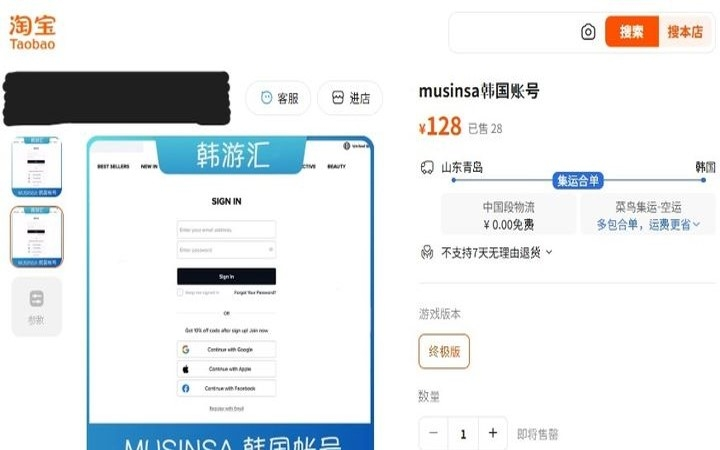

⚠️ 6. ETHICAL CHALLENGES
Privacy vs Accuracy
In order to enhance the users' experiences and customers' journal, many online shopping platforms used recommendation systems to personalize users' experience. These platforms have collected many personal information of the users such as what they like, buy and watch. When the recommendation systems are more well-developed, privacy-personalized trade-offs appear (Ojokoh et al., 2025,). Collecting more users' data increases the recommendation accuracy, while the breach risks increase. Companies are facing ethical challenges which are choosing high accuracy with high potential data leaks or worsening personalized user experience with minimizing data collection.
Last year, a serious personal data leak of Coupang showed the awful consequences of large-scale data collection. Coupang is the biggest e-commerce platform in South Korea, called the "Amazon of Korea". An employee stole its data leading to 33.7 million customers accounts leakage which affected more than 50% of South Korea population (Chia, 2025). Phone number, email address, name, email address, order history and users' name were all exposed (Chia,2025).Park (2025) indicated that many Coupang accounts are sold in Taobao for around RMB 23 to 183, approximately 5,000 to 40,000 Korean won. Moreover, Coupang users received many scams calls and messages after the data leakage.
Although recommendation systems provide better user experiences and more profits for operations, it is a doubled-edge sword. The data breach could cause unpredictable losses.

📚 References:
Chia, O. (2025, December 1). South Korea: Online retail giant Coupang hit by massive data leak. BBC. https://www.bbc.com/news/articles/c36zwywll02
Ojokoh, B. A., Isinkaye, F. O., Zhang, M., Tom, J. J., Gabriel, A. J., Afolabi, O., & Afolabi, B. (2025). Privacy and security in recommenders: an analytical review. Artificial Intelligence Review, 58(11). https://doi.org/10.1007/s10462-025-11333-4
Park. S. M. (2025c, December 3). Coupang denies Chinese account sales linked to data breach. The Chosun Daily.